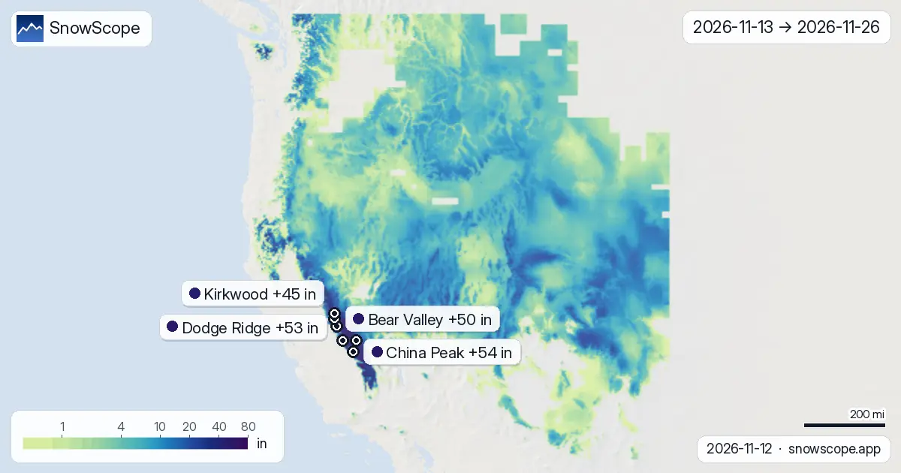
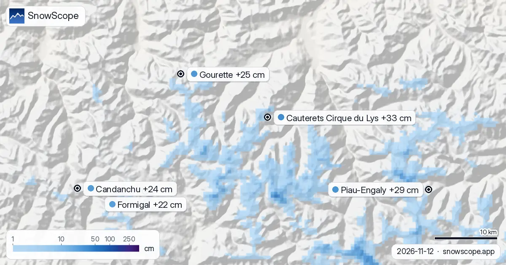
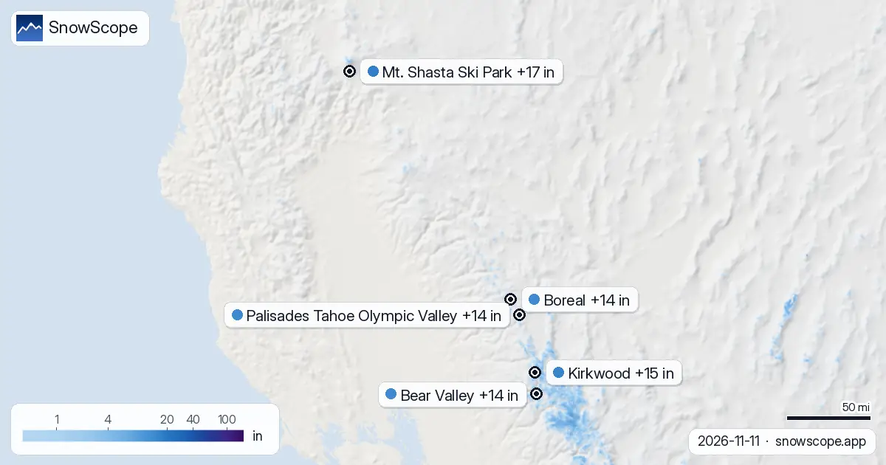
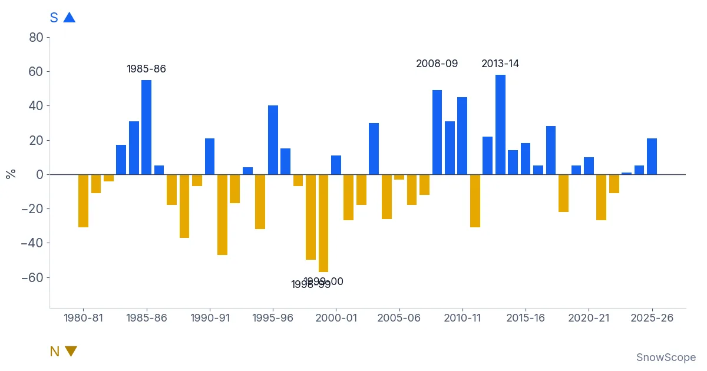
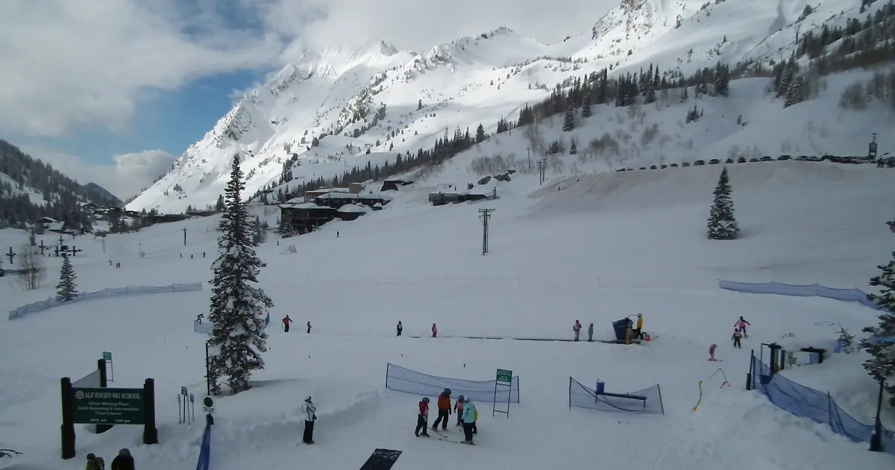

Bollettini neve · Dove sciare
Bollettini neve quotidiani per sciatori: dove c'è neve, cosa arriva e dove sciare, dalla mappa neve di SnowScope e dalle stazioni di misura. Ogni numero viene dai dati del giorno.

Ghiacciaio del Pitztal a dicembre: 87 cm a metà montagna in un tipico 15 dicembre, più neve che negli anni '80; giornaliero 77 EUR, 6 giorni 410 EUR.

Per una settimana bianca in famiglia a basso costo a dicembre ad Astún-Candanchú, punta a fine dicembre, quando le piste in quota hanno buona neve nel 67 % degli inverni passati.

Germania a dicembre: la Zugspitze e la vetta del Fellhorn avevano 30 cm a metà dicembre in almeno 9 inverni su 10; Sudelfeld, Brauneck e Feldberg raramente.

Puy-Saint-Vincent offre uno skipass giornaliero adulto a 44 EUR con buona neve a dicembre in quota, confrontato qui con il grande vicino Serre Chevalier.

Oppdal a dicembre: 60 cm alla base (585 m) in un tipico 15 dicembre, 93 % degli inverni con 30 cm a metà dicembre, meglio della base di Trysil.

Grimentz-Zinal offre 71 km di piste e una neve sicura in alta quota per il tuo viaggio di dicembre, con skipass di 6 giorni a CHF 339,00.

Austria prima di Natale: Galtür 258 EUR e Kühtai 269 EUR per 6 giorni, con 30 cm in oltre il 90 % degli inverni; i ghiacciai costano di più, le piccole stazioni sono un azzardo.

Stai pianificando un viaggio a dicembre a Baqueira Beret? Guarda la nostra cronologia della neve, i prezzi dei biglietti a partire da 70,00 € per un pass giornaliero e come si confronta con Astún-Candanchú.

Classifichiamo le stazioni sciistiche francesi in base alle probabilità di neve a dicembre e ai prezzi dei pass, partendo da 36,00 EUR per un pass giornaliero adulto a Les Karellis.

Galtür a dicembre: 55 cm a metà montagna in un tipico 15 dicembre, 93 % degli inverni con 30 cm a metà dicembre; giornaliero di bassa 55,50 EUR fino al 18 dicembre.

Geilo a dicembre: 57 cm a metà montagna in un tipico 15 dicembre, 96 % degli inverni con 30 cm a metà dicembre; giornaliero da 590 NOK (circa 56 EUR).

Grandvalira viene spesso venduta come una meta economica per sciare a dicembre, eppure la neve naturale alla base è in media di soli 9 cm negli scorsi inverni.

Hemsedal a dicembre: 70 cm a metà montagna e 106 cm in vetta in un tipico 15 dicembre, ma 32 cm alla base; Geilo vicino da 590 NOK al giorno.

Ghiacciaio di Hintertux a dicembre: 98 cm a 3245 m e 52 cm a metà montagna in un tipico 15 dicembre; giornaliero 82 EUR, 6 giorni 399 EUR.

Confronta le probabilità di neve a dicembre e i prezzi verificati degli skipass a partire da 40,00 EUR nelle aree sciistiche italiane per la tua gita in auto nel weekend.

Sciare a Kühtai a dicembre: 60 cm alla base (1939 m) in un tipico 15 dicembre, skipass 6 giorni in bassa stagione a 269 EUR fino al 18 dicembre.

Les 2 Alpes raggiunge i 3.511 m per neve abbondante a dicembre 2026, con un skipass adulti di 6 giorni a 266,50 EUR.

Les Karellis offre 45 km di piste e uno skipass adulto di 6 giorni a 191,00 EUR con una probabilità del 98 % di neve a metà montagna a fine dicembre.

Levi a dicembre: 38 cm in un tipico 15 dicembre, 91 % degli inverni con 30 cm a Natale, e più neve di un tempo; giornaliero 60 EUR, online 57 EUR.

Scia a Livigno per 51,50 EUR al giorno prima del 18 dicembre, quando la neve in cima raggiunge i 30 cm nel 100 % degli inverni passati.

Montgenèvre ha 56 cm di neve abituale a dicembre alla base, offrendo agli sciatori del weekend una copertura migliore rispetto a Sestriere, oltre il confine.

Sciare a Obertauern a dicembre: 43 cm in un tipico 15 dicembre a metà montagna, skipass 6 giorni a 331 EUR prima di Natale. Storico neve e prezzi.

Pila sopra Aosta offre uno skipass giornaliero fisso a 60,00 EUR e neve affidabile a dicembre sulle quote alte.

Gli impianti di Saas-Fee raggiungono i 3.556 m, dove la nostra storia della neve mostra che il 100 % degli inverni passati ha almeno 30 cm di neve entro metà dicembre.

12 località nordiche a dicembre: Hemavan, Hemsedal e Geilo avevano 30 cm a metà montagna a metà dicembre nel 96-100 % degli inverni; giornalieri finlandesi 58-60 EUR.

Scopri le piste tranquille di St-Luc Chandolin, dove la neve a metà montagna ha raggiunto i 30 cm nel 98 % degli inverni a fine dicembre.

Trysil a dicembre: 44 cm a metà montagna in un tipico 15 dicembre, 83 % degli inverni con 30 cm a metà dicembre; i prezzi sono dinamici, quindi prenotate presto.

Valloire-Valmeinier offre 131 km di piste e il 98 % di probabilità di avere 30 cm di neve a metà montagna entro metà dicembre.

Zugspitze a dicembre: 122 cm a 2627 m in un tipico 15 dicembre, giornaliero adulti online 70,50 EUR; Garmisch-Classic sotto 69 EUR con molta meno neve.

Mölltaler Gletscher a dicembre: 66 cm all'impianto più basso (2103 m) e 128 cm a metà montagna in un tipico 15 dicembre; 6 giorni in bassa stagione 332 EUR.

Un principiante prudente può fidarsi di Courmayeur a dicembre, quando la media a metà montagna è di 60 cm di neve nei nostri inverni passati?

Åre a dicembre: 40 cm a metà montagna in un tipico 15 dicembre, 89 % degli inverni con 30 cm a metà dicembre, ma forte calo in vetta dagli anni '80.

Superficie innevata: 49.467 sq mi (128.120 km²) il 11 novembre, 49.050 sq mi (127.040 km²) oggi, 64.429 sq mi (166.870 km²) previsti per il 16 …

Da oggi al 16 novembre ci aspettiamo 5 in (12 cm) a Stowe, 4 in (11 cm) a Bolton Valley Resort e 4 in (10 cm) a Sugarbush Resort. I nostri valori …

Da oggi al 16 novembre ci aspettiamo 13 in (34 cm) a Bear Valley, 13 in (34 cm) a Dodge Ridge e 13 in (33 cm) a Badger Pass. Una parola sui numeri: i …

Stratton per quota, dal nostro modello: vetta 4 in (10 cm) (3.881 ft / 1.183 m), metà 2 in (6 cm) (2.936 ft / 895 m), base 1 in (2 cm) (1.991 ft / …

39 in (99 cm) sui pendii alti: ecco perché Telluride è in cima alla nostra lista. Altezza oggi, neve fresca delle ultime 72 ore, previsione: messe …

Revelstoke, previsioni neve: fino a 10–21 cm attesi entro il 16 novembre (Canada occidentale). A Whistler Blackcomb lo zero termico sale tra 1.500 m …

Modello più previsione sulle Alpi oggi danno neve fresca polverosa. Cosa indossare, cosa portare e quando sciare, località per località. I consigli …

Dévoluy, tendenza neve: fino a 24–32 cm possibili entro il 16 novembre (Alpi). Fino al 16 novembre la nostra previsione indica 35 cm a Orcières …

Dal 11 novembre la copertura nevosa è passata da 39.090 km² a 76.100 km²; il 16 novembre la previsione indica 57.910 km². Pfelders ha oggi il manto …

Le località sciistiche dell'Atlante oggi non trattengono neve sulle piste. La neve è immagazzinata solo sulle vette più alte: circa 40 km² di …

Le nostre scelte sono La Grave, Pfelders e Les Deux Alpes: abbiamo guardato l'altezza neve di oggi, la neve fresca delle ultime 72 ore e la …

Lo zero termico decide se le montagne accumulano neve o scaricano pioggia: nei prossimi giorni la nostra previsione lo colloca sui Pirenei tra …

Neve fresca a La Grave: 61 cm nelle ultime 72 ore, compresi 3 cm nelle ultime 24. Il nostro modello neve ora mette circa 78 cm sui pendii superiori. …

La nostra previsione mette lo zero termico nel Nord-est degli USA tra 0 ft (0 m) e 4.593 ft (1.400 m) nei giorni a venire. Il giovedì 12 novembre, …

Tra 1.380 m e 3.410 m: è lì che la nostra previsione colloca lo zero termico nel Canada occidentale nei prossimi giorni. Nelle ore più miti la quota …

Le mappe di oggi guardano due settimane avanti sui Pirenei, dal 13 novembre al 26 novembre. Vengono da i due modelli globali che arrivano a due …

Dove nevicherà nel Nord-est degli USA tra il 13 novembre e il 26 novembre, e quanto? Abbiamo interrogato i due modelli globali che arrivano a due …

Quattordici giorni di neve fresca su una mappa, dal 13 novembre al 26 novembre, per ogni montagna nel Canada occidentale: è ciò che si aspettano i …

A Telluride la quota cambia tutto: il nostro modello indica 0 in (0 cm) alla base (8.734 ft / 2.662 m), 2 in (6 cm) a metà montagna (10.620 ft / …

Ecco le nuove mappe delle prossime due settimane sulle Alpi, dal 13 novembre al 26 novembre: la neve fresca attesa sul terreno, letta da i due …

Ecco le nuove mappe delle prossime due settimane sull'Atlante (Marocco), dal 13 novembre al 26 novembre: la neve fresca attesa sul terreno, letta da …

Le nostre mappe a due settimane mostrano dove dovrebbe cadere neve fresca nell'Ovest degli USA tra il 13 novembre e il 26 novembre, secondo i due …

Whistler Blackcomb, 116 cm di neve: l'altezza di oggi sui pendii alti (12 novembre). 162 cm: è la neve di oggi sui pendii alti di Mount Washington …

Kirkwood, tendenza neve: fino a 16 in possibili entro il 15 novembre (Ovest degli USA). Fino al 15 novembre la nostra previsione indica 23 in (58 cm) …

Mount Cain Alpine Park, neve fresca rispetto alla regione: 15 cm in 72 ore (12 novembre). La superficie innevata è passata da 281.250 km² il 10 …

Cimarron Mountain Club, 39 in di neve: l'altezza di oggi sui pendii alti (12 novembre). 42 in (106 cm): è la neve di oggi sui pendii alti di …

Mount Cain Alpine Park: quanta neve arriva? 37 cm entro il 15 novembre. Quanta neve arriva nel Canada occidentale, e dove? Fino al 15 novembre la …

Il nostro modello divide Piau-Engaly in tre quote: 2 cm in vetta (2.527 m), 0 cm a metà montagna (2.144 m), 0 cm alla base (1.762 m). Nelle ultime 72 …

Bollettino neve sull'Atlante (Marocco), 12 novembre. Località sciistiche dell'Atlante oggi: niente neve sulle piste. Neve solo sulle vette più alte: …

Bollettino neve sui Pirenei, 12 novembre. Guardando al 15 novembre, la previsione porta 33 cm a Cauterets Cirque du Lys, 29 cm a Piau-Engaly e 25 cm …

A 1.308 m a Dent de Vaulion, i 0 cm di oggi sono più di quanto questa data abbia portato in 34 dei 46 inverni passati (abituale: 0 cm): nella neve …

L'area bianca sulla mappa è passata da 45.820 km² (9 novembre) a 38.440 km² oggi, e la previsione dice 46.730 km² il 14 novembre. Glacier 3000: …

Les Deux Alpes, previsioni neve rispetto alla regione: 51 cm entro il 14 novembre. La superficie innevata è passata da 45.820 km² il 9 novembre a …

Bollettino neve sulle Alpi, 11 novembre. Tre ingredienti, una lista: l'altezza neve di oggi, la neve fresca delle ultime 72 ore e la previsione …

Dal 9 novembre la neve è passata da 40 km² a 20 km² oggi; per il 14 novembre la nostra previsione indica 10 km². Oggi le piste dell'Atlante sono …

Secondo il nostro modello neve e la previsione, oggi sui Pirenei porta neve sottile di inizio stagione e aria mite che può lasciare una crosta. Qui …

Bollettino neve nel Nord-est degli USA, 11 novembre. Fino al 14 novembre la previsione indica 15 in (38 cm) a Okemo Mountain, 12 in (30 cm) a …

Nei prossimi giorni lo zero termico nell'Ovest degli USA dovrebbe muoversi tra 8.333 ft (2.540 m) e 13.780 ft (4.200 m), secondo la nostra …

Bollettino neve nell'Ovest degli USA, 11 novembre. Fino al 14 novembre la previsione indica 17 in (43 cm) a Mt. Shasta Ski Park, 15 in (39 cm) a …

Dove andare a sciare nell'Ovest degli USA? Tre ingredienti, una lista: l'altezza neve di oggi, la neve fresca delle ultime 72 ore e la previsione …

38 cm in 72 ore: è la neve fresca caduta a Tweedsmuir Ski Club. Tweedsmuir Ski Club ha guadagnato 38 cm di neve nuova nelle ultime 72 ore, 35 cm dei …

Il nostro modello neve e la previsione per oggi nel Canada occidentale indicano neve fresca polverosa, una nevicata in arrivo, mattine ghiacciate e …

Abbiamo pesato la neve già al suolo, la neve fresca delle ultime 72 ore e quello che aggiunge la previsione, e abbiamo scelto Whistler Blackcomb, …

Lo zero termico nel Nord-est degli USA, prossimi giorni: tra 1.936 ft (590 m) e 6.037 ft (1.840 m). Ore più miti: quota neve circa 984 ft (300 m) più …

Dov'è oggi la neve più alta nell'Ovest degli USA? Se oggi cerchi più neve nell'Ovest degli USA, guarda Wolf Creek (Stati Uniti): circa 35 in (90 cm) …

Il terreno bianco è cambiato: 676 sq mi (1.750 km²) il 8 novembre, 42 sq mi (110 km²) oggi e 12.668 sq mi (32.810 km²) attesi il 13 novembre. Da oggi …

In 24 inverni su 46 le località del versante italiano e delle Alpi meridionali francesi hanno avuto un inverno relativamente più ricco del versante nord. Il grafico, le grandi annate e il tempo che le ha prodotte.

A dicembre la neve dipende prima di tutto dalla quota. 46 inverni passati in 676 stazioni delle Alpi mostrano quanta neve aspettarsi il 1°, il 15 e il 22 dicembre, da sotto i 1.200 m a oltre i 2.400 m.

Dov'è oggi la neve più alta nel Canada occidentale? Neve più alta nel Canada occidentale oggi: Manning Park Resort, circa 110 cm sui pendii superiori …

Lo zero termico sui Pirenei, prossimi giorni: tra 2.420 m e 3.710 m. La quota neve, circa 300 m più in basso, tocca il massimo di 3.400 m a Masella …

Un piano economico di 3 giorni sul Lago di Como a dicembre con i prezzi reali 2026-27: treni, battelli, funicolare e sci ai Piani di Bobbio o a Madesimo, quanto si risparmia rispetto a Cortina e le probabilità di neve a Natale.

8 cm: è la neve massima che il nostro modello trova oggi sull'Atlante. Le località sciistiche dell'Atlante oggi non hanno neve sulle piste. Il nostro …

Fino a 37 cm: è quanto la nostra previsione dà a Piau-Engaly entro il 13 novembre. Fino al 13 novembre la nostra previsione indica 37 cm a …

Vail in numeri: picco abituale di circa 64 in (162 cm) a metà montagna in 46 inverni passati, marzo il mese più nevoso, più terreno, accesso e sicurezza.

Zermatt in cifre: dove la neve resiste, i mesi più sicuri e come raggiungere il paese senz'auto, da 46 inverni passati.

Steamboat, Colorado, per famiglie: cosa va bene per i più piccoli, i bambini, i ragazzi e i genitori, con la neve di 46 inverni passati a tre quote.

Verbier va bene per i principianti? Quando la neve è migliore? Come si arriva? Risposte sulle 4 Vallées e su 46 inverni passati.

Come passare il primo giorno a Park City Mountain, Utah, e quando andarci: il nostro storico dà circa 71 in (180 cm) come picco abituale a metà montagna in 46 inverni passati.

Un'immagine, 100 catene montuose nelle Alpi, nei Pirenei, nell'Atlante e in Nord America: il Canada guida con l'89% di copertura nevosa, le Alpi arrivano al 45%, l'Atlante e il nord-est degli Stati Uniti sono ancora senza neve.

Il Sellaronda da Selva (Sëlva) in Val Gardena: passi Gardena, Campolongo, Pordoi e Sella in ordine, con il nostro storico neve di 46 inverni passati.

Mt Baker, Washington: circa 133 in (337 cm) di picco abituale a metà montagna in 46 inverni passati, un record mondiale di neve, nessun alloggio in quota.

Val d'Isère e l'Espace Killy per principianti, sciatori intermedi ed esperti, con la neve di 46 inverni passati a tre quote.

Pianifica Mammoth Mountain per stagione: circa 93 in (235 cm) di picco abituale a metà montagna in 46 inverni passati, marzo il più nevoso, primavere lunghe, inverni variabili.

Kitzbühel è famosa e bassa. Che cosa dicono 46 inverni passati della neve a 762 m, 1.377 m e 1.993 m, che cosa è cambiato e quali settimane sono la scommessa più sicura.

I miti su Jackson Hole verificati con i fatti e il nostro storico: circa 80 in (204 cm) di picco abituale a metà montagna in 46 inverni passati, senza un calo chiaro.

Dieci punti pratici per una vacanza sugli sci a Livigno: le strade, il freddo, i negozi duty-free, i due versanti e il periodo migliore per la neve, da 46 inverni passati del nostro storico.

Arrivare a Telluride d'inverno, aeroporto per aeroporto: Telluride Regional, Montrose, la strada 145 con la legge sulla trazione del Colorado e la cabinovia gratuita per Mountain Village.

Come si svolge di solito una giornata di neve a Whitewater, vicino a Nelson, dal primo sguardo alle previsioni all'ultima discesa, con la neve di 46 inverni passati a tre quote.

Arc 1600, 1800, 1950 e 2000 a confronto per neve, piste e accesso, con 46 inverni passati del nostro storico neve a tre quote di Les Arcs.

Arrivare a Snowbird d'inverno: una sola strada nel canyon (SR-210), la legge sulla trazione dello Utah, lo ski bus UTA e il tragitto dall'aeroporto.

Whistler Blackcomb per ogni livello, con il nostro storico: circa 370 cm di picco abituale a metà montagna in 46 inverni passati, marzo e aprile i mesi più nevosi.

Dai contadini walser al Weißer Ring: le date che hanno fatto Lech Zürs, poi il nostro storico della neve allora e oggi, i primi quindici di 46 inverni passati contro gli ultimi quindici.

In auto a Palisades Tahoe d'inverno: distanze da Reno, controlli catene R-1, R-2 e R-3, parcheggio da prenotare, bus TART gratis.

Una lista pratica per Stowe, Vermont: strati, protezione del viso, maschera, lamine affilate e scaldamani, legata alla neve di 46 inverni passati sul Mount Mansfield.

Sciare a Lake Louise a inizio stagione: perché parte presto, com'è di solito la neve di novembre e dicembre in 46 inverni passati e come sciare su un fondo ancora sottile.

Cosa è vero di La Grave, la montagna del fuoripista sotto la Meije: terreno, sicurezza, neve per mese e tendenza, da 46 inverni passati.

Big Sky, Montana, facile da immaginare: 5.850 acri sotto il Lone Peak, e una neve circa cinque volte più spessa vicino alla cima che alla base in 46 inverni passati.

Andorra non ha un grande aeroporto: come raggiungere Grandvalira da Barcellona o Tolosa, il tunnel dell'Envalira, la CG2 e i parcheggi.

Magic Mountain a Londonderry, Vermont: una piccola stazione indipendente con boschi ripidi, una vecchia seggiovia rossa e poca neve naturale. Cinque cose da sapere, con la neve di 46 inverni passati.

Sciate prima con la mente tutto il dislivello di Revelstoke: la neve in cima, a metà montagna e alla base in valle in 46 inverni passati, e quando ogni parte è al meglio.

Sette giorni nella Silvretta Arena, uno alla volta: dove è la neve, quando passare a Samnaun e che cosa dicono 46 inverni passati della neve di Ischgl a tre quote.

Aspen Snowmass a confronto: Snowmass ha circa 75 in (190 cm) di picco abituale a metà montagna in 46 inverni passati, Aspen Mountain circa 69 in (174 cm).

Gourette e Cauterets a confronto: quote, neve abituale per mese, settimane migliori e come arrivare, da 46 inverni passati.

Mad River Glen, Vermont: neve naturale, circa 30 in (75 cm) di picco abituale a metà montagna in 46 inverni passati, febbraio il mese più nevoso. Tre modi per organizzare la giornata.

Banff Sunshine Village mese per mese: circa 100 cm a metà montagna in un marzo abituale in 46 inverni passati, aprile il più nevoso in alto, stagione fino a fine maggio.

Saas-Fee è senza auto: treno fino a Visp e AutoPostale 511, la strada della valle del Rodano e i treni auto, i parcheggi all'ingresso e i bus gratuiti.

Circa 109 in (276 cm) è il picco abituale di Alta a metà montagna in 46 inverni passati. Qui: perché lo snowboard resta a casa, i mesi migliori e come salire nel canyon.

Modello più previsione sui Pirenei oggi danno neve sottile di inizio stagione e aria mite che può lasciare una crosta. Cosa indossare, cosa portare e …